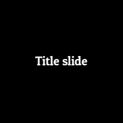
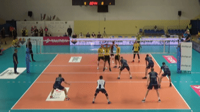

editry provides R bindings to editly, a “tool and framework for declarative NLE (non-linear video editing) using Node.js and ffmpeg. Editly allows you to easily and programmatically create a video from a set of clips, images, audio and titles, with smooth transitions and music overlaid.”
Installation
install.packages("editry", repos = c("https://openvolley.r-universe.dev",
"https://cloud.r-project.org"))
## or
## install.packages("remotes") ## if needed
remotes::install_github("scienceuntangled/editry")Before editry can be used, you either need to install the editly npm package, or to have docker running on your system with an editly docker image pulled. You only need to do this once.
To install editly npm:
This will automatically install the system binaries for node (via noder::nr_install_node()) and ffmpeg (via er_install_ffmpeg()) if not already present on your system. (The ffmpeg installer only works on Windows and Linux at this stage. On other platforms (e.g. Mac) you will currently need to install ffmpeg yourself.)
Alternatively, install docker and pull an appropriate image, for example:
docker pull scienceuntangled/editly(The scienceuntangled/editly docker image uses a modified version of editly. Other editly docker images can be used, but will not support the logo_* parameters in er_header or er_spec.)
Example usage
The sequence of operations that editly performs to produce a video is called an “edit spec”. See the editly GitHub page for details and examples.
Typically a spec consists of a sequence of clips, along with some header parameters that control aspects of the overall video. Each clip contains one or more layers. Let’s start with two simple clips:
clips <- list(
er_clip_title2(duration = 3, text = "Title slide",
transition = er_transition(name = "windowslice")),
er_clip_image(duration = 3, zoom_direction = "out",
path = "https://jeroen.github.io/images/Rlogo.png"))Now we can create the spec that defines all the steps required to build the video:
outfile <- tempfile(fileext = ".mp4")
my_spec <- er_spec(clips = clips , out_path = outfile,
allow_remote_requests = TRUE)
## allow_remote_requests allows us to use a remote URL for the image sourceAnd compile this into a video. We use the fast option here to generate a low-quality preview:
er_exec_wait(spec = my_spec, fast = TRUE)Note: if you are using editly via docker, use er_exec_docker instead of er_exec_wait.

Example 2
A clip from a video, with a bit of decoration added.
my_video <- "https://github.com/openvolley/ovdata/raw/master/inst/extdata/video/2019_03_01-KATS-BEDS-clip.mp4"
my_logo <- "https://github.com/openvolley/community/raw/master/docs/talks/common/ovlogo-blur.png"
clips <- list(
## the video segment
er_clip_video(path = my_video, cut_from = 1, cut_to = 8),
## add an outro banner with logo
er_clip(duration = 1.5, layers = list(er_layer_fill_color(),
er_layer_image(path = my_logo))),
## and a blank finishing screen
er_clip_pause(duration = 0.25))
outfile <- tempfile(fileext = ".mp4")
my_spec <- er_spec(clips = clips, out_path = outfile,
allow_remote_requests = TRUE)